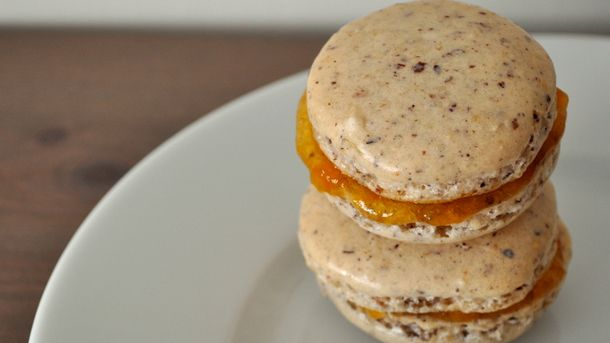

Hazelnut Apricot Macarons Recipe

Macarons are a must have for any cafe! This particular recipe uses hazelnut flour instead of almond flour to create a nutty flavor in the macrons.
The apricot jam is a perfect fruity but not too sweet filling.
Ingredients
- 1 cup hazelnut flour
- 2 cups confectioners sugar
- 3 egg whites
- 1/8 tsp salt
- 2 tbsp sugar
- apricot jam
Steps
- Adjust oven rack to upper and lower-middle positions and preheat oven to 300°F. Line two baking sheets with parchment paper.
- In a small bowl, sift together hazelnut flour and confectioners sugar. There shouldn't be any lumps left. Set aside.
- In a large bowl, beat egg whites on medium speed until frothy, about 1 minute. Add salt and beat one minute more. Turn up speed on mixer to medium-high and slowly incorporate sugar into the mix. Beat until glossy medium peaks form.
- Use a rubber spatula to fold flour mixture into egg whites, going about 1/4 cup at a time. Continue until all flour is mixed in evenly.
- Carefully transfer batter to a piping bag. Pipe batter into 1 inch rounds on baking sheets. After rounds are piped, tap sheet on counter to help expel air bubbles. Bake cookies until they are dry on top and easily lifted from the parchment, 16-19 minutes. Let cool.
- When cookies are cool, arrange into similarly sized pairs. Top the bottom of one pair with about 1/4 teaspoon apricot jam, then top with other cookie. Repeat until all sandwiches are made.